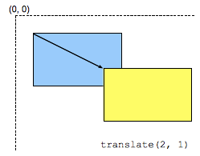

The translate() CSS function repositions an element in the horizontal and/or vertical
directions. Its result is a {{cssxref("<transform-function>")}} data type.

This transformation is characterized by a two-dimensional vector. Its coordinates define how much the element moves in each direction.
/* Single <length-percentage> values */ transform: translate(200px); transform: translate(50%); /* Double <length-percentage> values */ transform: translate(100px, 200px); transform: translate(100px, 50%); transform: translate(30%, 200px); transform: translate(30%, 50%);
<length-percentage> values0. For example, translate(2px) is equivalent to
translate(2px, 0). A percentage value refers to the width of the reference box defined by the
{{cssxref("transform-box")}} property.
<length-percentage> values| Cartesian coordinates on ℝ2 | Homogeneous coordinates on ℝℙ2 | Cartesian coordinates on ℝ3 | Homogeneous coordinates on ℝℙ3 |
|---|---|---|---|
|
A translation is not a linear transformation in ℝ2 and can't be represented using a Cartesian-coordinate matrix. |
|||
[1 0 0 1 tx ty] |
translate({{cssxref("<length-percentage>")}} , {{cssxref("<length-percentage>")}}?)
<div>Static</div> <div class="moved">Moved</div> <div>Static</div>
div {
width: 60px;
height: 60px;
background-color: skyblue;
}
.moved {
transform: translate(10px); /* Equal to: translateX(10px) or translate(10px, 0) */
background-color: pink;
}
{{EmbedLiveSample("Using_a_single-axis_translation", 250, 250)}}
<div>Static</div> <div class="moved">Moved</div> <div>Static</div>
div {
width: 60px;
height: 60px;
background-color: skyblue;
}
.moved {
transform: translate(10px, 10px);
background-color: pink;
}
{{EmbedLiveSample("Combining_y-axis_and_x-axis_translation", 250, 250)}}
{{Compat}}